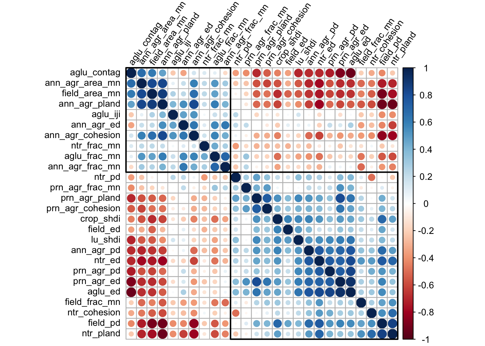
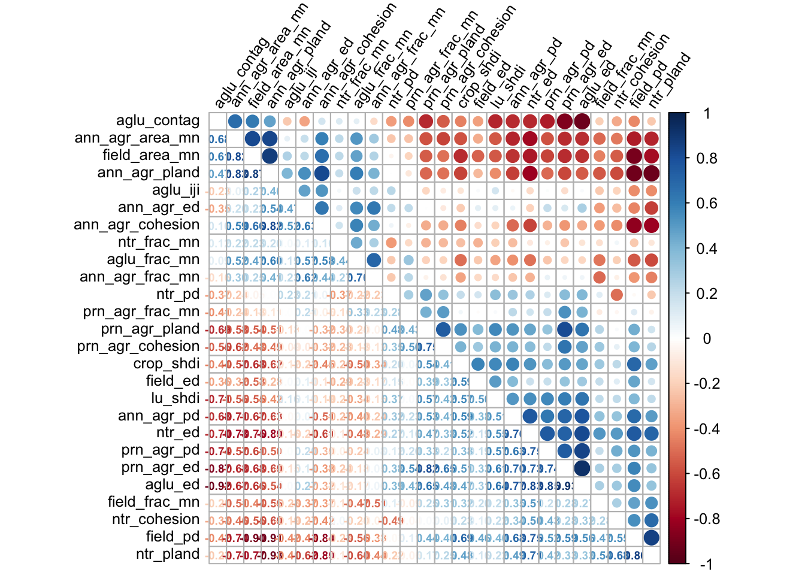
Ecosystem service improvements depend on the baseline condition, except for pollination.
This pattern holds even if we factor out margin area.
The trend is different if we look at % change in ecosystem services from baseline, per margin area
Looking at ES % change from baseline shows some stronger patterns than before for sediment and water recharge.
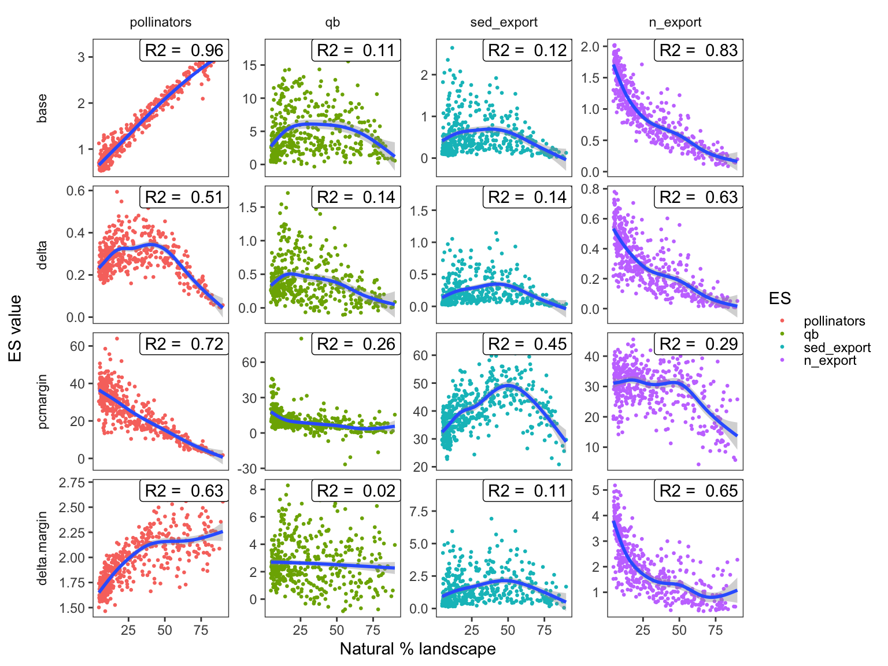
Pollinators:
Baseline model
r2 = 0.983
OOB MSE = 0.00867
Delta model
r2 = 0.855
OOB MSE = 0.00116Percent change model
r2 = 0.887
OOB MSE = 16.76883
Per margin model
r2 = 0.813
OOB MSE = 0.01081Nitrogen export:
Baseline model
r2 = 0.884
OOB MSE = 0.02782Delta model
r2 = 0.803
OOB MSE = 0.00682Percent change model
r2 = 0.616
OOB MSE = 23.01329
Per margin model
r2 = 0.788
OOB MSE = 0.27045Sediment export:
Baseline model
r2 = 0.521
OOB MSE = 0.10736Delta model
r2 = 0.511
OOB MSE = 0.02651Percent change model
r2 = 0.742
OOB MSE = 15.97009
Per margin model
r2 = 0.489
OOB MSE = 0.80886Baseflow:
Baseline model
r2 = 0.491
OOB MSE = 6.57747Delta model
r2 = 0.537
OOB MSE = 0.04663Percent change model
r2 = 0.43
OOB MSE = 40.38403
Per margin model
r2 = 0.363
OOB MSE = 1.86024
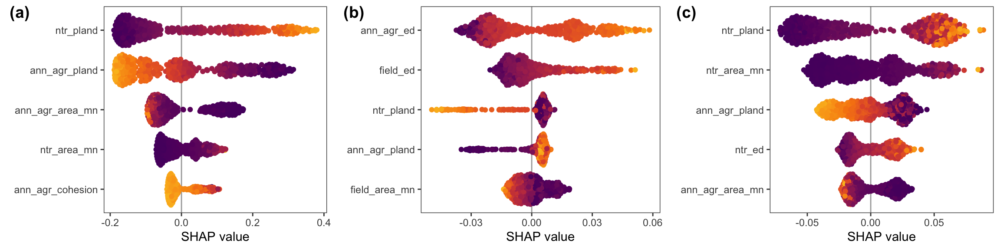
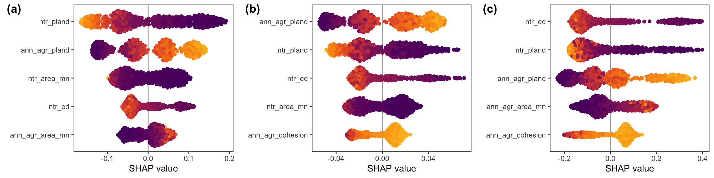
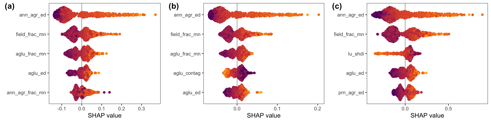
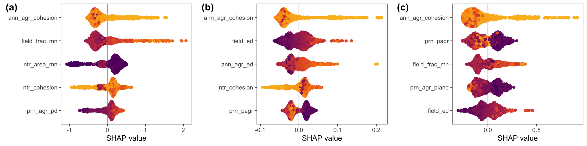
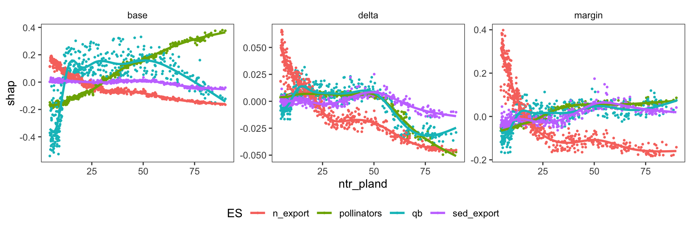
Important for sediment export (and pollinator delta)
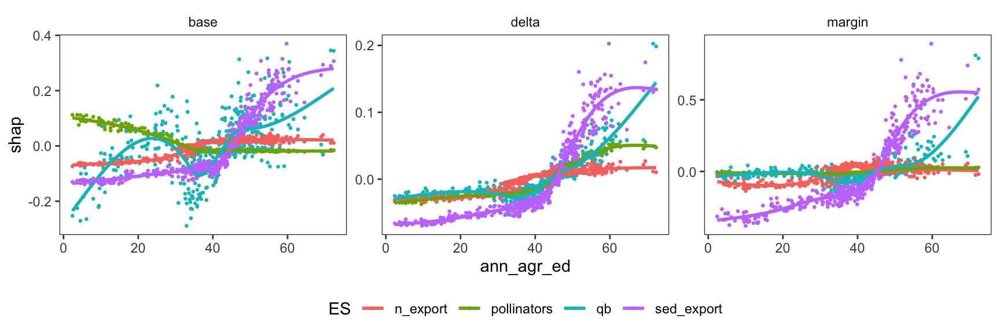
Important for baseflow
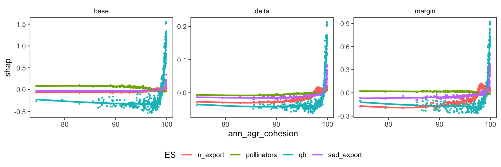
Important for nutrient export
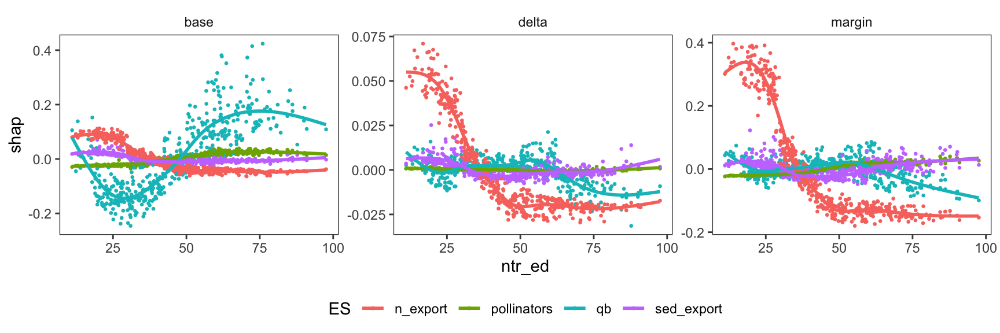